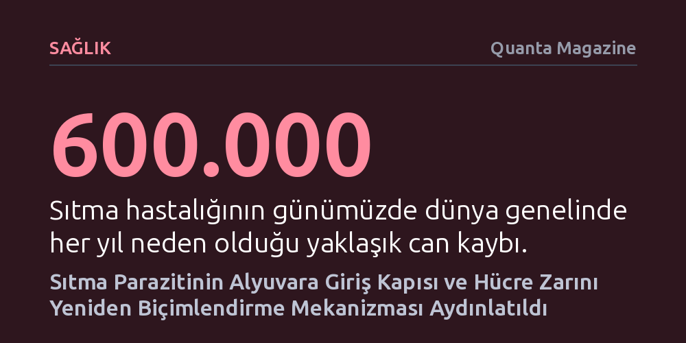

SAGLIK · Quanta Magazine · 2026-10-24
Kriyo-elektron mikroskobuyla yapılan yeni bir araştırma, sıtma parazitinin alyuvar zarını delmeden içeri sızmasını sağlayan moleküler geçiş kapısının yapısını ortaya çıkardı. Parazitin hücre zarını bükerek içeri girmesini sağlayan bu mekanizma, ilaca dirençli sıtma türlerine karşı yeni tedavilerin önünü açabilir.
Sıtma parazitinin hücreyi delmek yerine zarın yapısını değiştirerek içeri sızdığını gösteren bu keşif, mevcut ilaçlara hızla direnç geliştiren hastalığa karşı henüz enfeksiyon başlamadan müdahale edilebilecek yeni bir tedavi yolunu kanıtlıyor.

Orta Çağ İtalya'sında bataklıkların yaydığı kötü havanın yol açtığına inanılan sıtma, insanlık tarihinin en yıkıcı salgınlarından biri olageldi. 20. yüzyıldaki tüm ölümlerin yaklaşık yüzde beşinden sorumlu olan hastalık, günümüzde dahi her yıl 600 binden fazla insanın yaşamına mal oluyor. 1880 yılında Fransız hekim Alphonse Laveran'ın ilkel bir mikroskopla kanda Plasmodium cinsinden tek hücreli parazitleri keşfetmesine kadar nedeni dahi bilinemeyen sıtma, biyolojinin en karmaşık bulmacalarından birini barındırıyor.
Parazitin sivrisinek bağırsağından insan karaciğerine ve nihayetinde kana uzanan son derece karmaşık bir yaşam döngüsü bulunuyor. Parazit bu süreçte iplikten yıldıza kadar pek çok farklı şekle bürünebiliyor. Kan dolaşımına girdiğinde merozoit adı verilen küresel yapıdaki evresine ulaşan parazitin tek bir hedefi vardır: Yaklaşık 8 mikrometre çapındaki alyuvar hücrelerinin içine girmek. Ancak bu giriş rastgele bir delme işlemiyle gerçekleşemez; hücre patlarsa parazitin saklanacağı ve besleneceği güvenli liman yok olur.
Columbia Üniversitesi'nden Chi-Min Ho ve ekibi, ileri kriyo-elektron mikroskobu yöntemlerini kullanarak parazitin alyuvara girdiği kritik anı ilk kez moleküler çözünürlükle haritalandırdı. Parazit alyuvara ulaştığında, hedef hücrenin zarına hareketli kavşak (moving junction) adı verilen dairesel bir protein kanca halkası yerleştiriyor. Kendi yüzeyindeki proteinlerle bu kancalara kenetlenen parazit, bir dakika bile sürmeyen bu operasyonda hücre zarını arkasında iz bırakmadan kapatacağı bir kapıya dönüştürüyor.
Araştırmacılar, her bir kancadaki dört protein birimini ayrı ayrı analiz ederek mekanizmanın nasıl işlediğini ortaya çıkardı. Parazit alyuvar zarının hemen altına üç proteinden oluşan yoğun bir takoz yerleştiriyor, dördüncü bir protein ise bu yapıyı istilacı parazite bağlıyor. Oluşan elektrostatik kuvvetler ve mekanik basınç, alyuvar zarındaki lipit moleküllerini sıkıştırıp yerinden oynatıyor. Böylece hücre zarının eğriliği tersine dönüyor ve zar parazitin etrafında içeri doğru bükülüyor. Ayrışan bazı lipitler parazit için koruyucu bir kılıf oluştururken, parazit tamamen içeri girdiğinde hücre zarı arkasından kusursuz biçimde mühürleniyor.
Alyuvarlar çekirdeği ya da gelişmiş organelleri olmayan, esasen hemoglobin dolu biyolojik torbalardır. İçeri sızmayı başaran Plasmodium, adeta boş bir depoyu lüks bir daireye dönüştürür gibi hücreyi sıfırdan yeniden düzenlemeye başlar. Hemoglobini sindirip atıkları dışarı atan proteinler salgılar ve şekil değiştirerek trofozoit adı verilen daha esnek, amipsi bir yapıya bürünür. Bu esneklik, sertleşmiş veya ölü hücreleri tespit eden bağışıklık sistemini yanıltmak için hayati önem taşır.
Parazit aynı zamanda alyuvarın dış yüzeyine yapışkan proteinler yerleştirerek enfekte hücrenin damar duvarlarına tutunmasını sağlar; bu durum sıtmanın en şiddetli ağrılı semptomlarına yol açar. Damar duvarına tutunan hücreler, kusurlu alyuvarları ve parazitleri kandan süzen dalağa sürüklenmekten kurtulur. Üstelik parazit, yüzeyindeki bu yapışkan proteinleri düzenli olarak değiştirerek bağışıklık sisteminin radarına yakalanmadan haftalarca gizlenebilir. Yaklaşık 48 saatlik eşeysiz çoğalmanın ardından alyuvar patlar ve milyonlarca yeni parazit diğer hücreleri istila etmek üzere kana karışır.
Bugüne kadar kullanılan klorokin gibi klasik sıtma ilaçları paraziti kan dolaşımında hedef alıyordu; ancak Plasmodium türlerinin bu bileşiklere karşı hızla direnç geliştirmesi tedaviyi çıkmaza soktu. Hücreye giriş mekanizmasının aydınlatılması, yeni ilaçlar için doğrudan bir tıkaç noktası sunuyor. Chi-Min Ho'nun vurguladığı gibi, "Girişi engellerseniz paraziti olduğu yerde durdurursunuz." Ho'nun ekibi, yapay zeka destekli bir protein tasarım platformuyla bu hareketli kavşağı bloke eden yapay bir protein geliştirmeyi ve laboratuvar ortamında parazitin girişini engellemeyi başardı.
Bununla birlikte, giriş aşamasını hedeflemenin ciddi bir zorluğu bulunuyor. İstila süreci yaklaşık 60 saniye gibi çok kısa bir zaman diliminde tamamlandığı için, geliştirilecek ilacın ya vücutta uzun süre kararlı kalması ya da saniyeler içinde etki göstermesi gerekiyor. Yine de bu moleküler kapı, kedilerde bulunan Toxoplasma gondii ve bağırsak enfeksiyonlarına yol açan Cyclospora gibi benzer giriş mekanizmalarını kullanan diğer tek hücreli parazit hastalıklarının tedavisinde de evrensel bir anahtar vazifesi görebilir.